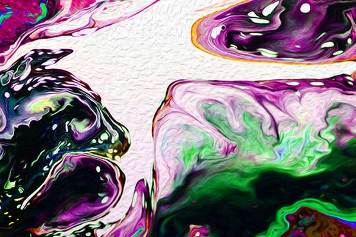

Co to grafika rastrowa?
Grafika rastrowa (potocznie bitmapa) – prezentacja obrazu za pomocą mapy punktów na siatce siatki odpowiednio kolorowanych pikseli na monitorze komputera, drukarce lub innym urządzeniu wyjściowym. W systemach komputerowych grafika rastrowa jest przechowywana w sposób skompresowany albo nieskompresowany w wielu formatach plików graficznych (JPG, PNG, JPEG, WEBP itd.).

Charakterystyka grafiki rastrowej
Bez zastosowania kompresji kolor każdego piksela jest definiowany pojedynczo, tworząc mapę bitową, którą charakteryzują trzy podstawowe liczby – wysokość i szerokość mapy bitowej, liczone w pikselach, oraz kolor w danym trybie koloru. Obrazki z głębią kolorów RGB często składają się z kolorowych kwadratów zdefiniowanych przy pomocy trzech bajtów – jeden bajt (czyli 8 bitów) na składową czerwoną koloru, jeden na zieloną i jeden na składową niebieską. Obrazki o mniejszej liczbie kolorów potrzebują mniej informacji (bitów) na piksel, np. obrazek jedynie w kolorach czarnym i białym wymaga tylko jednego bitu na każdy piksel (zwany jest wtedy bitmapą).

Jakość obrazu a wielkość pliku
Jakość obrazka rastrowego jest określana przez całkowitą liczbę pikseli (wielkość obrazu) oraz ilości informacji przechowywanych w każdym pikselu. Na przykład obrazek posiadający 24 bity informacji o kolorze może przedstawić łagodniejsze cieniowanie od obrazka posiadającego jedynie 16 bitów informacji na każdy piksel, ale też nie pokaże łagodniejszego cieniowania od obrazka mającego 48 bitów na piksel. Podobnie, obrazek o wymiarach 640 × 480 pikseli (zawierający 307 200 pikseli) będzie wyglądał nierówno i chropowato w porównaniu do obrazka o wymiarach 1280 × 1024 (1 310 720 pikseli).
Rozmiary i rozdzielczość
Rozmiar obrazka rastrowego nie może zostać zwiększony bez zmniejszenia jego ostrości. Jest to cecha nieznana grafice wektorowej, którą łatwo można skalować, dostosowując jej wielkość do urządzenia, na którym jest wyświetlany obraz. Grafika rastrowa jest jednak bardziej użyteczna od wektorowej do zapisywania zdjęć i realistycznych obrazów, podczas gdy grafika wektorowa jest częściej używana do obrazów tworzonych z figur geometrycznych oraz prezentacji tekstu.